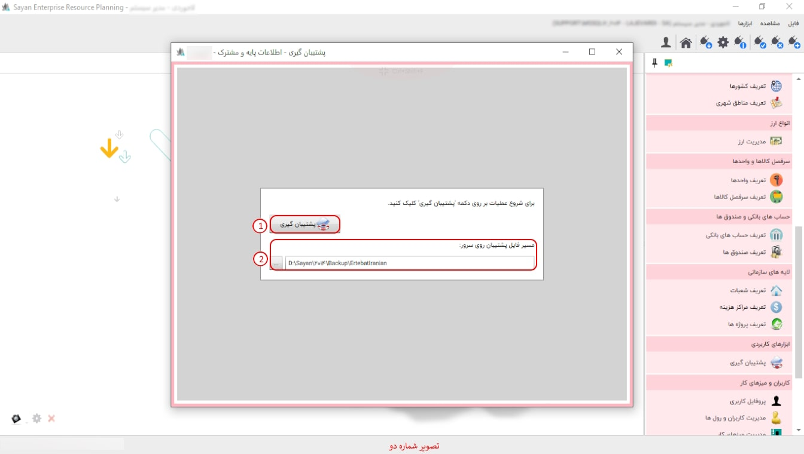

در این گزینه شما می توانید از اطلاعات پایگاه داده ی خود فایل پشتیبان تهیه کنید، فایل پشتیبان این امکان را به شما می دهد که در مواقع نیاز اطلاعات خود را بازیابی نمایید، وقتی بر روی گزینه ی پشتیبان گیری کلیک می کنید تصویر زیر نمایان می شود:
برای ادامه مطلب به تصویر شماره دو مراجعه نمایید.
-پشتیبان گیری (کادر شماره یک):این قسمت، این امکان را به شما می دهد که بک آپ اطالاعات تان را در سرور ذخیره می نماید.
-مسیر فایل پشتیبان روی سرور (کادر شماره دو ):در این قسمت می توانید بک آپ تان را در مسیر مورد نظرتان انتخاب نمایید.